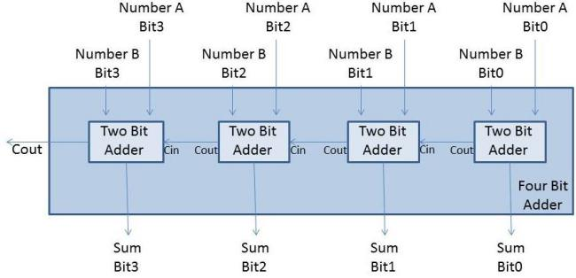

Spice3BenchmarkFourBitBinaryAdderADDER - 4 BIT ALL-NAND-GATE BINARY ADDER |
|
Information
This information is part of the Modelica Standard Library maintained by the Modelica Association.
This Four Bit Binary Adder model is one of the five benchmark circuits described in the SPICE3 Version e3 User's Manual (see information of package Spice3).
The model adds two 4-bit numbers (Number A and Number B). It has eight inputs where the first one is the lowest-order bit of the first number (Number A Bit0), the second is the lowest-order bit of the second number (Number B Bit0), the third one is the second-order bit of the first number (Number A Bit1) and so on. The Four Bit Binary Adder has four outputs where the first one (Sum Bit0) is the lowest-order bit, the second and the third one (Sum Bit1 and Sum Bit2) are the next two bits and the last one (Sum Bit3) is the highest-order bit. The picture illustrates the pin-assignment.

Inside the model the names of the inputs refer to the names in the picture as follows:
X1_p1_v --> Number A Bit0
X1_p2_v --> Number B Bit0
X1_p3_v --> Number A Bit1
X1_p4_v --> Number B Bit1
X1_p5_v --> Number A Bit2
X1_p6_v --> Number B Bit2
X1_p7_v --> Number A Bit3
X1_p8_v --> Number B Bit3
X1_p9_v --> Sum Bit0
X1_p10_v --> Sum Bit1
X1_p11_v --> Sum Bit2
X1_p12_v --> Sum Bit3
X1_p14_v --> Cout
The Four Bit Binary Adder is built out of two two bit adders which respectively are built out of two one bit adders. One one bit adder is build out of nine NAND circuits.
Please note, that the simulation time of the Four Bit Binary Adder can take several hours due to its immense size (e.g. 11387 equations).
The user is recommended to simulate from t=0 to t=1e-6s and observe the eight inputs (X1_p1_v, ..., X1_p8_v) and the four outputs (X1_p9_v, ..., X1_p12_v) and the carryout output (X1_p14_v).
The timing of the single transistors of the adder causes a delay which makes it hard to recognize the adder behaviour. Since the Four Bit Binary Adder is a SPICE3 benchmark, the circuit is not changed in order to see the adder behaviour in a better way.
Original SPICE3 netlist of the Four Bit Binary Adder:
ADDER - 4 BIT ALL-NAND-GATE BINARY ADDER *** SUBCIRCUIT DEFINITIONS .SUBCKT NAND 1 2 3 4 * NODES: INPUT(2), OUTPUT, VCC Q1 9 5 1 QMOD D1CLAMP 0 1 DMOD Q2 9 5 2 QMOD D2CLAMP 0 2 DMOD RB 4 5 4K R1 4 6 1.6K Q3 6 9 8 QMOD R2 8 0 1K RC 4 7 130 Q4 7 6 10 QMOD DVBEDROP 10 3 DMOD Q5 3 8 0 QMOD .ENDS NAND .SUBCKT ONEBIT 1 2 3 4 5 6 * NODES: INPUT(2), CARRY-IN, OUTPUT, CARRY-OUT, VCC X1 1 2 7 6 NAND X2 1 7 8 6 NAND X3 2 7 9 6 NAND X4 8 9 10 6 NAND X5 3 10 11 6 NAND X6 3 11 12 6 NAND X7 10 11 13 6 NAND X8 12 13 4 6 NAND X9 11 7 5 6 NAND .ENDS ONEBIT .SUBCKT TWOBIT 1 2 3 4 5 6 7 8 9 * NODES: INPUT - BIT0(2) / BIT1(2), OUTPUT - BIT0 / BIT1, * CARRY-IN, CARRY-OUT, VCC X1 1 2 7 5 10 9 ONEBIT X2 3 4 10 6 8 9 ONEBIT .ENDS TWOBIT .SUBCKT FOURBIT 1 2 3 4 5 6 7 8 9 10 11 12 13 14 15 * NODES: INPUT - BIT0(2) / BIT1(2) / BIT2(2) / BIT3(2), * OUTPUT - BIT0 / BIT1 / BIT2 / BIT3, CARRY-IN, CARRY-OUT, VCC X1 1 2 3 4 9 10 13 16 15 TWOBIT X2 5 6 7 8 11 12 16 14 15 TWOBIT .ENDS FOURBIT *** DEFINE NOMINAL CIRCUIT .MODEL DMOD D .MODEL QMOD NPN(BF=75 RB=100 CJE=1PF CJC=3PF) VCC 99 0 DC 5V VIN1A 1 0 PULSE(0 3 0 10NS 10NS 10NS 50NS) VIN1B 2 0 PULSE(0 3 0 10NS 10NS 20NS 100NS) VIN2A 3 0 PULSE(0 3 0 10NS 10NS 40NS 200NS) VIN2B 4 0 PULSE(0 3 0 10NS 10NS 80NS 400NS) VIN3A 5 0 PULSE(0 3 0 10NS 10NS 160NS 800NS) VIN3B 6 0 PULSE(0 3 0 10NS 10NS 320NS 1600NS) VIN4A 7 0 PULSE(0 3 0 10NS 10NS 640NS 3200NS) VIN4B 8 0 PULSE(0 3 0 10NS 10NS 1280NS 6400NS) X1 1 2 3 4 5 6 7 8 9 10 11 12 0 13 99 FOURBIT RBIT0 9 0 1K RBIT1 10 0 1K RBIT2 11 0 1K RBIT3 12 0 1K RCOUT 13 0 1K *** (FOR THOSE WITH MONEY (AND MEMORY) TO BURN) .TRAN 1NS 6400NS UIC .control run set options no break *plot v(1) v(2) *plot v(3) v(4) *plot v(5) v(6) *plot v(7) v(8) *plot v(9) v(10) *plot v(11) v(12) *plot v(13) *print v(9) v(10) print v(11) v(12) v(13) .endc .END
The model is built out of several subcircuits which were described only ones and used several times.
Parameters (2)
| DMOD |
Value: Type: ModelcardDIODE |
|---|---|
| QMOD |
Value: Type: ModelcardBJT |
Outputs (13)
| X1_p9_v |
Default Value: X1.p9.v Type: Real |
|---|---|
| X1_p10_v |
Default Value: X1.p10.v Type: Real |
| X1_p11_v |
Default Value: X1.p11.v Type: Real |
| X1_p12_v |
Default Value: X1.p12.v Type: Real |
| X1_p14_v |
Default Value: X1.p14.v Type: Real |
| X1_p1_v |
Default Value: X1.p1.v Type: Real |
| X1_p2_v |
Default Value: X1.p2.v Type: Real |
| X1_p3_v |
Default Value: X1.p3.v Type: Real |
| X1_p4_v |
Default Value: X1.p4.v Type: Real |
| X1_p5_v |
Default Value: X1.p5.v Type: Real |
| X1_p6_v |
Default Value: X1.p6.v Type: Real |
| X1_p7_v |
Default Value: X1.p7.v Type: Real |
| X1_p8_v |
Default Value: X1.p8.v Type: Real |
Components (18)
| DMOD |
Type: ModelcardDIODE |
|
|---|---|---|
| QMOD |
Type: ModelcardBJT |
|
| VCC |
Type: V_constant |
|
| VIN1A |
Type: V_pulse |
|
| VIN1B |
Type: V_pulse |
|
| VIN2A |
Type: V_pulse |
|
| VIN2B |
Type: V_pulse |
|
| VIN3A |
Type: V_pulse |
|
| VIN3B |
Type: V_pulse |
|
| VIN4A |
Type: V_pulse |
|
| VIN4B |
Type: V_pulse |
|
| X1 |
Type: FOURBIT |
|
| RBIT0 |
Type: R_Resistor |
|
| RBIT1 |
Type: R_Resistor |
|
| RBIT2 |
Type: R_Resistor |
|
| RBIT3 |
Type: R_Resistor |
|
| RCOUT |
Type: R_Resistor |
|
| g |
Type: Ground |